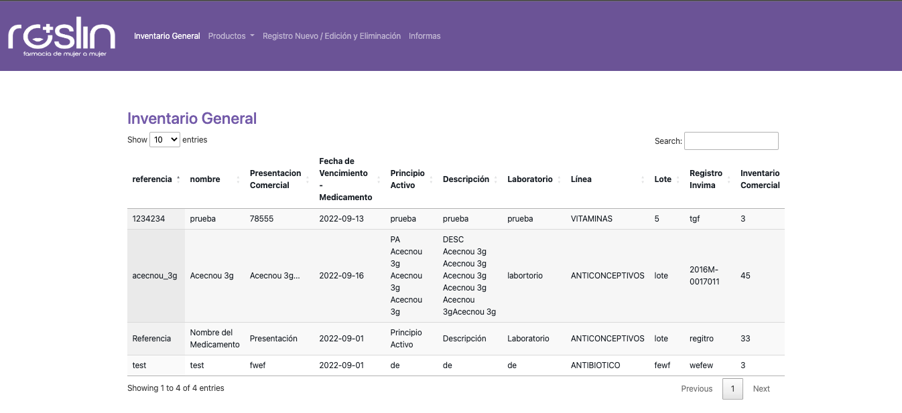

Proyectos personales de estudio
Sistema de inventario - Roslin Farmacia
....

Pagina de pedagogias activas con angular y react
.....
Proyectos Profesionales
1.Pedagogias Activas
Creación completa de la pagina web utilizando recursos de boostrap.
Ir a la pagina - Pedagogías activas


2.Roslin Farmacia -Farmacia de mujer a mujer
Adaptación de segmentos de la pagina Web de acuerdo a las necesidades del cliente frente al usuario final.
Ir a la pagina - Roslin Farmacia